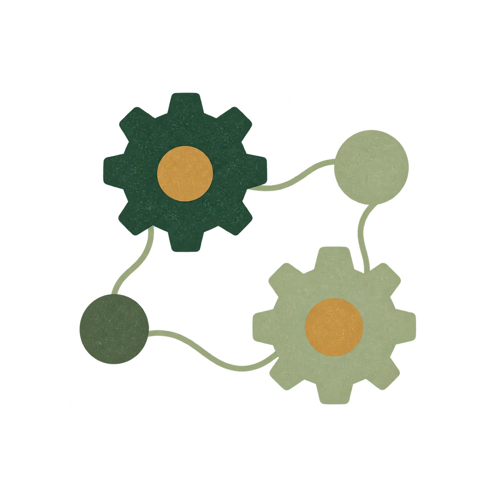

The work I’ll take on
We list the tasks I’ll handle, what your team will handle and who makes the decisions.
ServicesOngoing operations support
Part-time operations support for owners and operations leads in small to midsize businesses, especially food, beverage and manufacturing. I help coordinate projects, maintain reporting and introduce new procedures alongside your team.
Continuity without a full-time role
When your team needs regular help, I can take on projects and recurring tasks without a full-time hire.
I can keep a project schedule up to date, follow up on outstanding tasks, prepare reports and help your team learn a new procedure. We decide which responsibilities I’ll take on before starting.

How the arrangement worksThe proposal sets out the work, fees, initial period and how either of us can end the arrangement.
We list the tasks I’ll handle, what your team will handle and who makes the decisions.
We agree on hours, meeting times, response expectations and how we’ll stay in touch between meetings.
We check completed tasks and whether new procedures or tools are being used. We decide what continues and what your team is ready to take over.
Before we start
Yes. We can begin with a defined project, then decide whether ongoing support would be useful. A focused review is available if we need to investigate the problem before choosing what to change.
It means ongoing support on a part-time basis. We agree on the scope and time commitment, including whether the work is primarily advisory, hands-on implementation, or a combination.
Yes. I can take on projects, reporting or procedure updates while your operations lead continues to manage the team. We agree on responsibilities and who makes decisions at the start.
Let’s talk
Describe the process, product or project. We’ll discuss whether I can help.